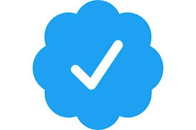

Bill Gates
Born : 28 October 1955 (age 62 years), Seattle, Washington, United States
Resisential : Medina, Washington, U.S.
Net Worth : 9,210 crores USD (2018) Forbes
Spouse : Melinda Gates (m. 1994)
Education : Harvard College (1973–1975), Lakeside School (1967–1973), Harvard College
Did you know : Bill Gates has the highest amount given to charity ($35 billion) among the greatest philanthropists.
Title :Co-Founder and Technology Advisor of Microsoft Co-Chairman of the Bill & Melinda Gates Foundation CEO of Cascade Investment Chairman of Branded Entertainment Network Chairman of TerraPower
Board member of :Microsoft and Berkshire Hathaway
About him
William Henry Gates III (born October 28, 1955) is an American business magnate, investor, author, philanthropist, humanitarian, and principal founder of Microsoft Corporation.[2][3] During his career at Microsoft, Gates held the positions of chairman, CEO and chief software architect, while also being the largest individual shareholder until May 2014. In 1975, Gates and Paul Allen launched Microsoft, which became the world's largest PC software company.[4][a] Gates led the company as chief executive officer until stepping down in January 2000, but he remained as chairman and created the position of chief software architect for himself.[7] In June 2006, Gates announced that he would be transitioning from full-time work at Microsoft to part-time work and full-time work at the Bill & Melinda Gates Foundation, which was established in 2000.[8] He gradually transferred his duties to Ray Ozzie and Craig Mundie.[9] He stepped down as chairman of Microsoft in February 2014 and assumed a new post as technology adviser to support the newly appointed CEO Satya Nadella.[10] Gates is one of the best-known entrepreneurs of the personal computer revolution. He has been criticized for his business tactics, which have been considered anti-competitive. This opinion has been upheld by numerous court rulings.[11] Since 1987, Gates has been included in the Forbes list of the world's wealthiest people, an index of the wealthiest documented individuals, excluding and ranking against those with wealth that is not able to be completely ascertained.[12][13] From 1995 to 2017, he held the Forbes title of the richest person in the world all but four of those years, and held it consistently from March 2014 – July 2017, with an estimated net worth of US$89.9 billion as of October 2017.[1] However, on July 27, 2017, and since October 27, 2017, he has been surpassed by Amazon founder and CEO Jeff Bezos, who had an estimated net worth of US$90.6 billion at the time.[14] As of May 5, 2018, Gates had a net worth of $91.5 billion, making him the second-richest person in the world, behind Bezos. Later in his career and since leaving Microsoft, Gates pursued a number of philanthropic endeavors. He donated large amounts of money to various charitable organizations and scientific research programs through the Bill & Melinda Gates Foundation.[15] In 2009, Gates and Warren Buffett founded The Giving Pledge, whereby they and other billionaires pledge to give at least half of their wealth to philanthropy.[16] The foundation works to save lives and improve global health, and is working with Rotary International to eliminate polio.[17]
Sessions
Bill Gates basically predicted the rise of Netflix and Facebook in a 1994 Playboy interview
Billionaire philanthropist foresaw shift from creating documents via pcs to accessing electronic media across web, records show Nineteen ninety-four was a big year for Bill Gates.
The newly married billionaire landed on top of Forbes’ list of the richest Americans. Microsoft was on the brink of becoming the technology powerhouse it is today.
Something else notable happened too: Gates gave an interview to Playboy magazine in which he correctly predicted the rise of services like Netflix and Facebook.
For context, the internet was a buzzworthy and somewhat mysterious technology in 1994. Time magazine ran a cover story on the internet and had to explain what it was in the introduction (”the world’s largest computer network and the nearest thing to a working prototype of the information superhighway”).
The internet was mostly used by scientists and scholars, though computers were becoming more common.
Still, Gates was a visionary.
He told Playboy that, in the information age, the primary use of personal computers would shift from creating documents to sharing and accessing electronic media across the web.
On how people might use the internet in the future, he said: ”Say you want to watch a movie. To choose, you’ll want to know what movies others liked and based on what you thought of other movies you’ve seen, if this is a movie you’d like. You’ll be able to browse that information. Then you select and get video on demand. Afterward, you can even share what you thought of the movie.”
What Gates described sounds a lot like Netflix, which launched its online subscription service in 2007. He added that the internet would change the “way we find information and make decisions,” even when those decisions are as simple as what to watch.
His prediction that we might someday tap into virtual communities for information hints at the invention of Facebook, which Mark Zuckerberg founded 10 years after the Playboy interview.
Gates envisioned an online community that knows no physical parameters:
“Think about how you find people with common interests, how you pick a doctor, how you decide what book to read. Right now it’s hard to reach out to a broad range of people. You are tied into the physical community near you. But in the new environment, because of how information is stored and accessed, that community will expand. This tool will be empowering, the infrastructure will be built quickly and the impact will be broad.”
Since its founding in 2004, Facebook has grown exponentially, to say the least. It has 1.23 billion daily active users, on average and employs 17,000 people around the world.
The Playboy interview has been taken down from the magazine’s website, but you can read it in its entirety via the Internet Archive’s Wayback Machine.